Metalle für das Anspruchsvolle.
Aluminium, Messing, Kupfer, Bronze und Neusilber – über 3.500 Artikel ab Lager, zugeschnitten ab Losgröße 1 und frei Haus geliefert. Von Menschen, die ihre Kunden noch mit Namen kennen.
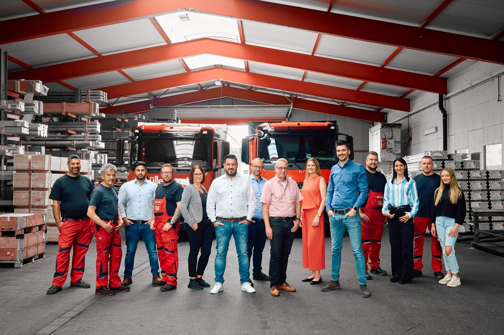
2. Generation
seit 1995
Fünf Werkstoffe. Jede Form, jede Größe.
Stangen, Rohre, Profile, Bleche und Platten – ausschließlich Qualitätsware direkt von den besten Herstellern aus Westeuropa.
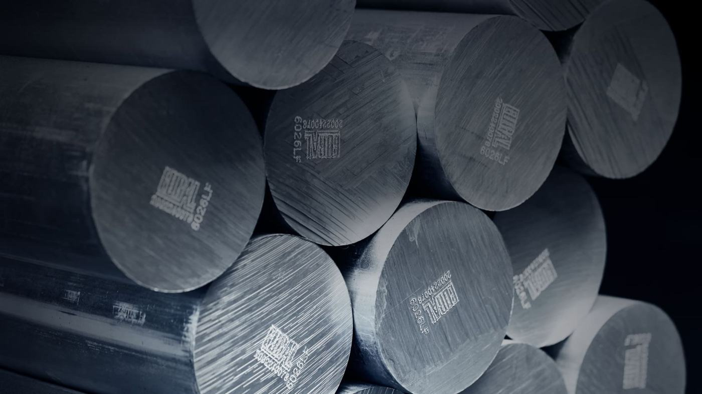
Aluminium
Leicht, vielseitig, bleifrei erhältlich
Sortiment ansehen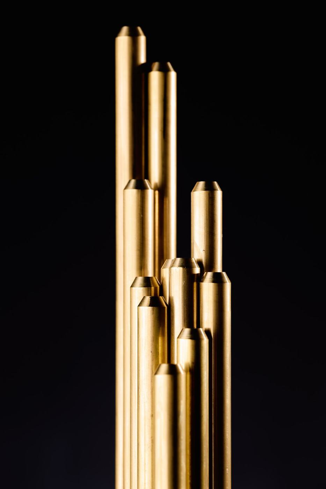
Messing
Zerspanbar, korrosionsbeständig, bleifrei möglich
Sortiment ansehen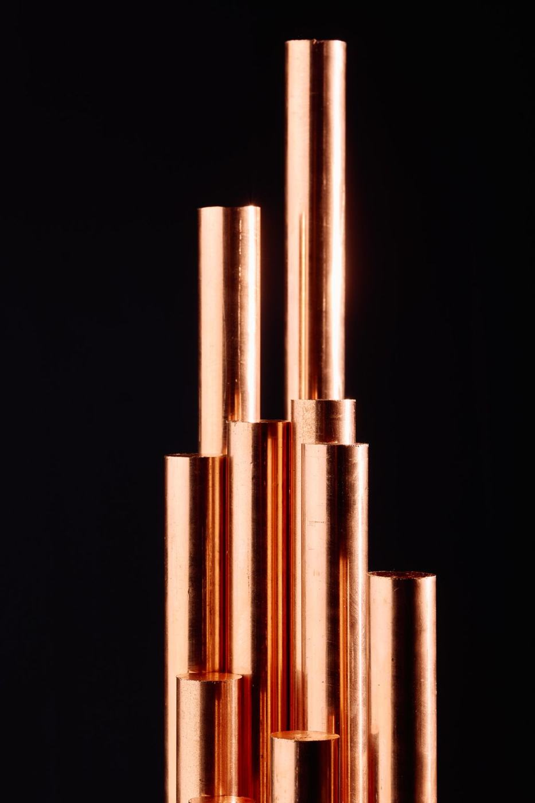
Kupfer
Beste Leitfähigkeit für Strom und Wärme
Sortiment ansehen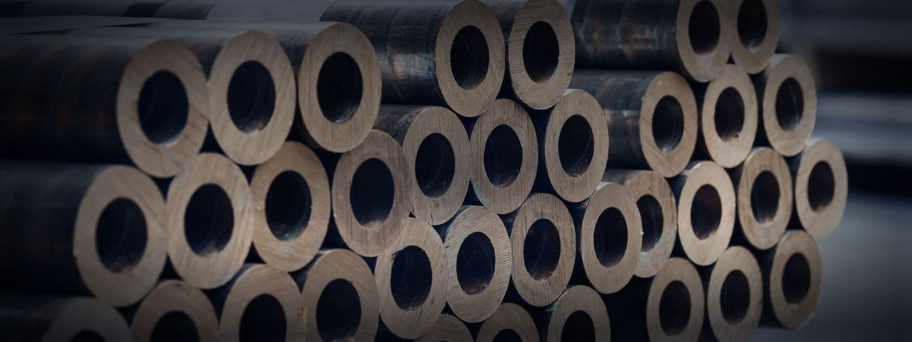
Bronze
Gleitlager, Federn, Seewasser
Sortiment ansehen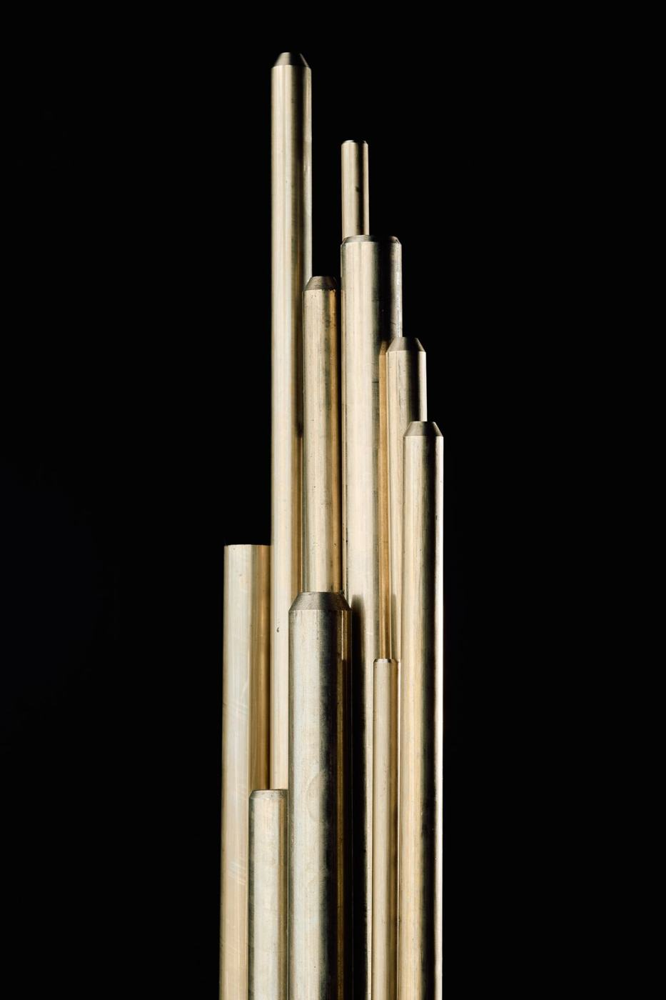
Neusilber
Silbrig, anlaufbeständig, gut umformbar
Sortiment ansehenVom Anruf bis zur Lieferung – einfach und schnell.
Anfragen oder bestellen
Telefonisch, per Mail oder direkt im Kundenportal. Persönliche Beratung ist jederzeit inklusive.
Zuschnitt nach Maß
Platten und Bleche bis 100 mm, Stangen bis Ø 400 mm – toleranzgenau auf Mayer- und Behringer-Maschinen.
Selbst abholen
Anruf genügt: Ihre Ware steht oft noch am selben Tag in Tuningen bereit.
Frei Haus geliefert
Mit eigenem Fuhrpark im Umkreis von 100 km kostenfrei ab 500 kg – deutschland- und europaweit per Spedition.
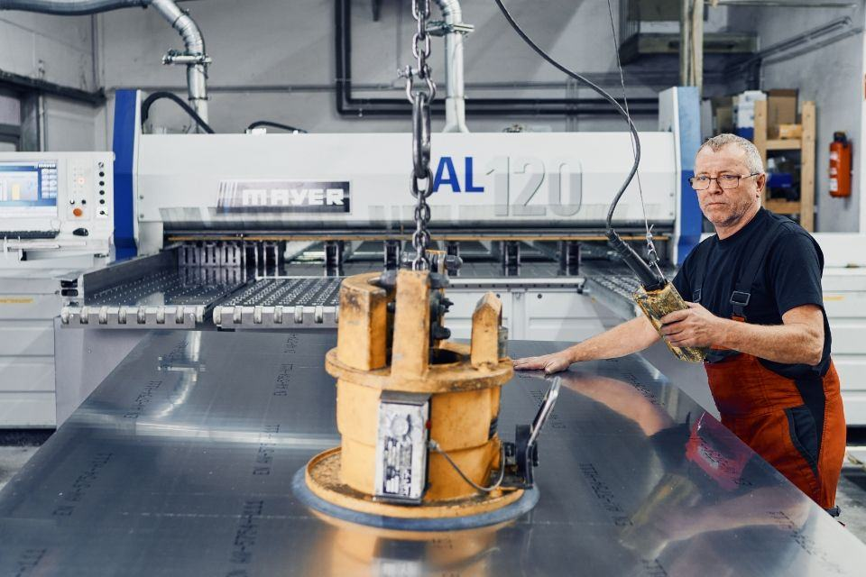
Millimeterarbeit, die sich sehen lässt.
Ob Einzelstück oder Großauftrag – wir bearbeiten jeden Auftrag mit derselben Sorgfalt.
- Plattenzuschnitt bis 100 mm Stärke, winklig und mit sauberen Schnittkanten
- Stangenzuschnitt bis Ø 400 mm, Fixlängen ab 11 mm
- Abschnitte und Reststücke kurzfristig zu Tagespreisen
- Späne-Recycling mit Gutschrift auf Ihrem Umarbeitungskonto
Wo Buntmetalle stecken, sind wir dabei.
60 bis 70 % unserer Kunden sind – wie wir – inhabergeführte Familienunternehmen. Dazu Global Player, Werkstätten, Schulen und Hobby-Bastler.
Einmal Metaller, immer Metaller.
Wir kennen unsere Kunden noch mit Namen und Gesicht – und das soll auch so bleiben.
Seit 1987 sind wir als Händler in der Welt der Nichteisen-Metalle zuhause. Qualitätsmanagement nach DIN EN ISO 9001, ausgezeichnet seit 1995, ist unser Garant für gleichbleibend hohe Leistung.
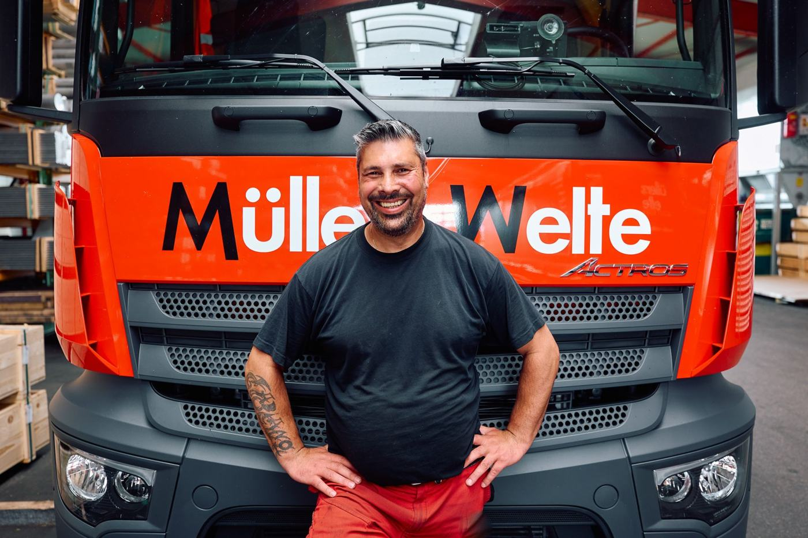
Fachwissen aus der Praxis.
Werkstoffzeugnisse, bleifreie Legierungen, Toleranzen – verständlich erklärt.
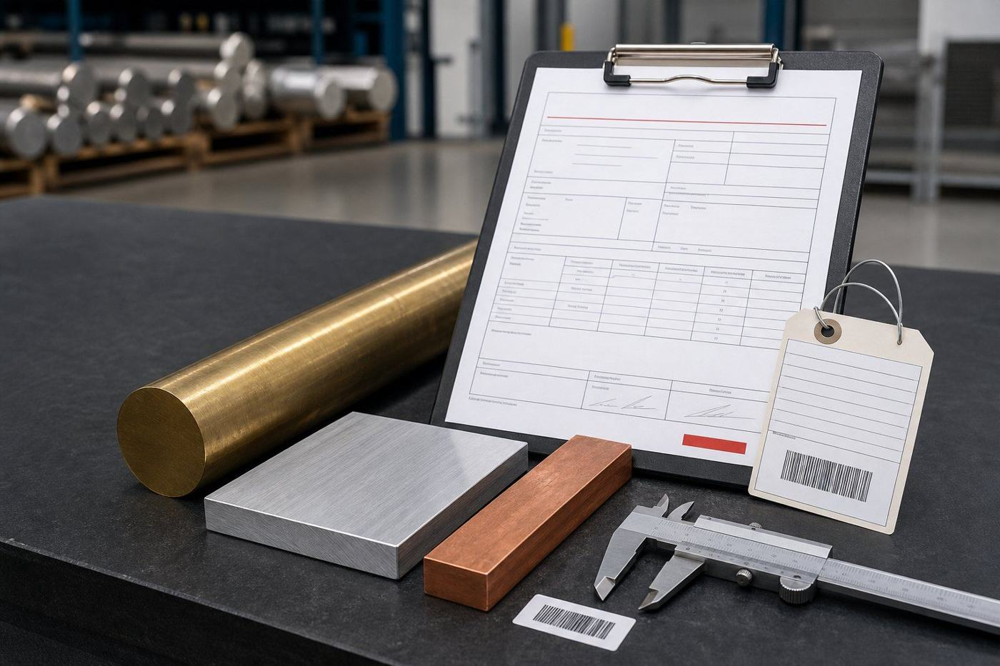
2.1, 2.2, 3.1 oder 3.2: Welches Werkstoffzeugnis Sie wirklich brauchen
Was in welchem Zeugnis steht, wer es ausstellen darf – und was beim Zuschnitt mit der Rückverfolgbarkeit passiert.
Weiterlesen →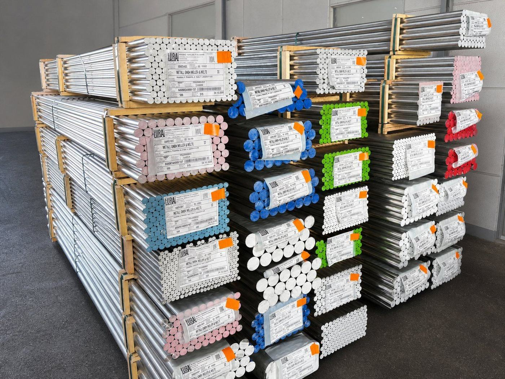
6060, 6082, 2007 oder 6026 LF: Welche Aluminiumlegierung passt zu Ihrem Bauteil?
Vier Fragen, ein Entscheidungsbaum und eine Kennwerttabelle – von der Legierung über den Zustand bis zur Lieferform.
Weiterlesen →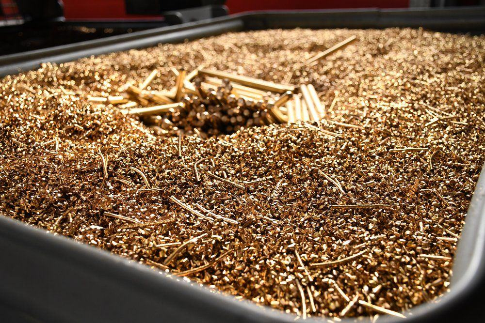
CuZn39Pb3 ersetzen: Welche bleifreie Messinglegierung passt zu welcher Anwendung?
CW724R, CW510L, CW511L oder CW725R? Entscheidungsmatrix für den Ersatz von CW614N – mit Fristen.
Weiterlesen →Wir freuen uns, Sie kennenzulernen.
Egal ob kleine oder große Unternehmen, regelmäßige Abnehmer oder Spontankäufer – für uns ist jeder Kunde wichtig.